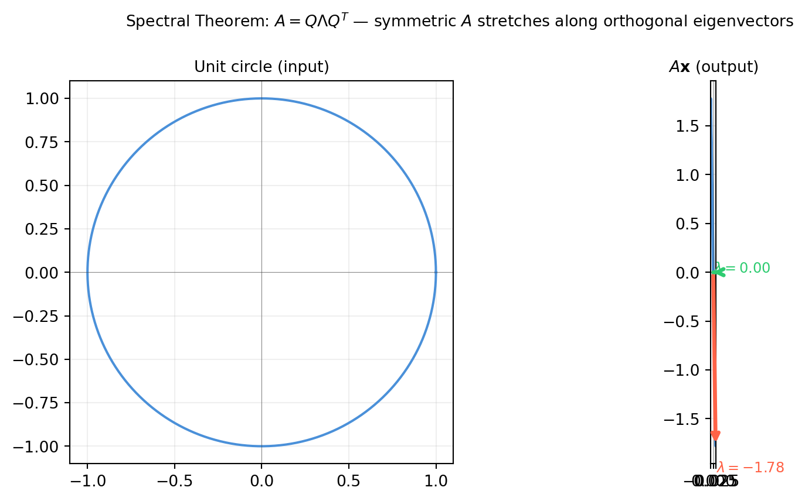
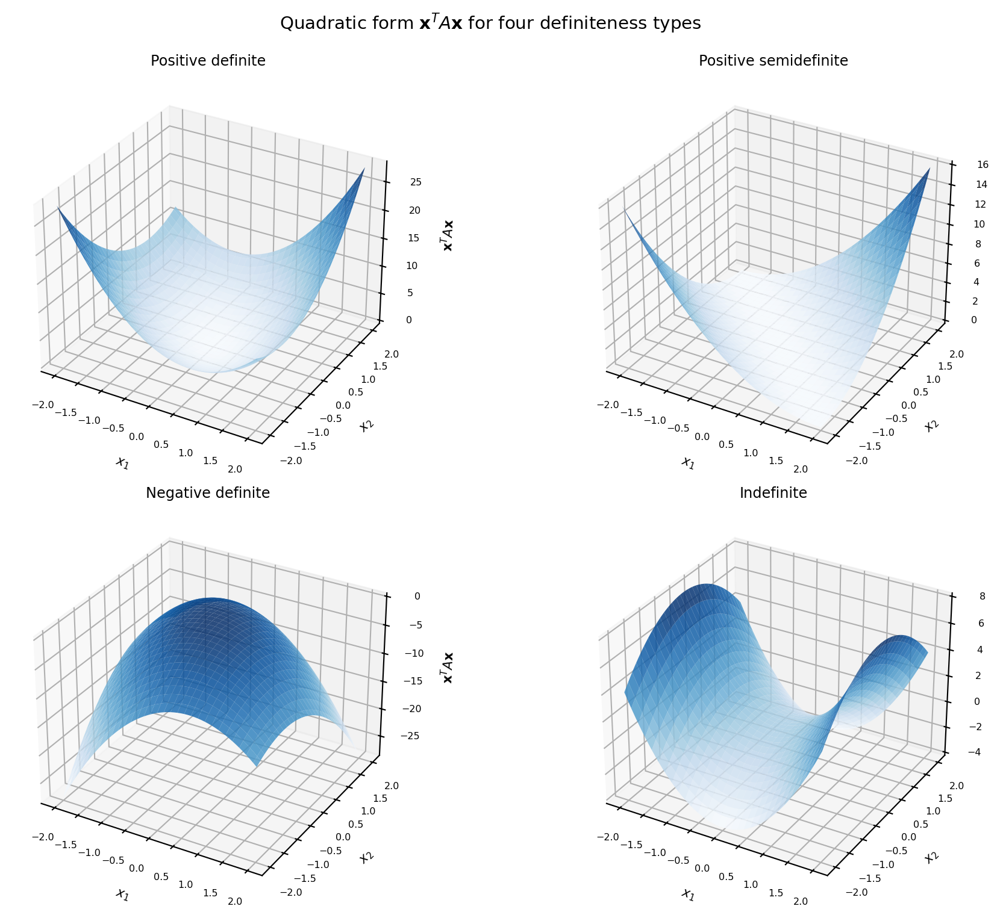
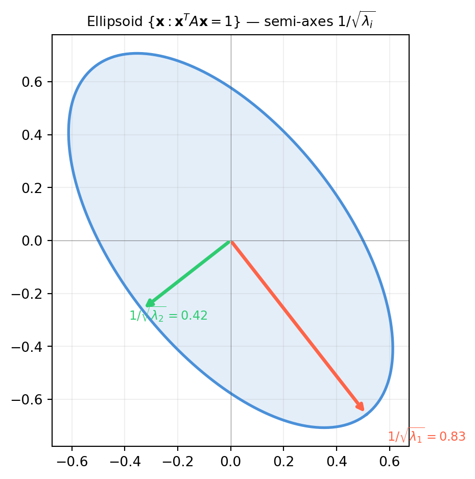
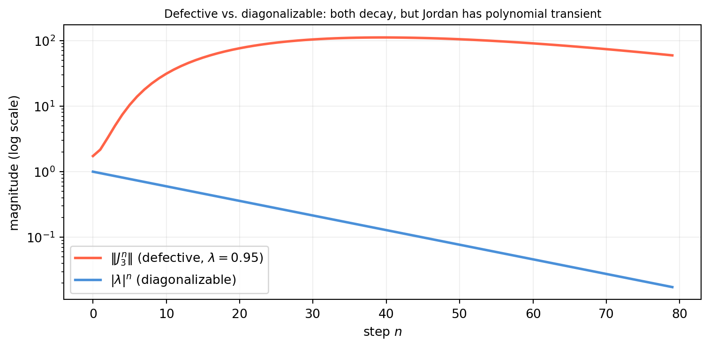

Chapter 13 taught us to find eigenvalues and eigenvectors of a matrix \(A\). This chapter asks a more structural question: can we choose a basis of eigenvectors and, if so, what does \(A\) look like in that basis?
The answer is the eigendecomposition (also called diagonalization):
\[A = P D P^{-1},\]
where the columns of \(P\) are eigenvectors and \(D\) is the diagonal matrix of the corresponding eigenvalues. When this factorization exists, \(A\) is called diagonalizable.
Why does this matter? A diagonal matrix is trivial to work with — powers, functions, and the matrix exponential all reduce to scalar operations on the diagonal entries. Diagonalization converts \(A\) from an arbitrary matrix into something as easy as a collection of independent scalars.
14.1.1 Construction: Building \(P\) and \(D\)
Suppose \(A\) has \(n\) linearly independent eigenvectors \(\mathbf{v}_1, \ldots, \mathbf{v}_n\) with eigenvalues \(\lambda_1, \ldots, \lambda_n\). Stack the eigenvectors as columns:
Diagonalization is a change of basis. In the eigenvector basis \(\mathcal{B} = \{\mathbf{v}_1, \ldots, \mathbf{v}_n\}\), the transformation \(A\) acts as pure scaling along coordinate axes:
\[[A]_{\mathcal{B}} = D = P^{-1} A P.\]
Think of it this way: \(P^{-1}\) re-expresses any vector in the eigenvector coordinate system, \(D\) scales each component by the corresponding eigenvalue, and \(P\) converts back to the standard basis. The round-trip is \(A\).
The middle and right panels are identical — confirming that \(A\) and \(PDP^{-1}\) are the same transformation.
14.1.4 Diagonalizability and Similarity
Two matrices \(A\) and \(B\) are similar if \(B = P^{-1}AP\) for some invertible \(P\). Diagonalizable matrices are exactly those similar to a diagonal matrix. Similar matrices represent the same linear transformation in different bases, so they share:
The same eigenvalues (with the same algebraic multiplicities)
The same determinant
The same trace
The same rank
import numpy as nprng = np.random.default_rng(42)A = rng.standard_normal((4, 4)) # shape (4, 4)P = rng.standard_normal((4, 4)) # shape (4, 4) — change-of-basis matrixB = np.linalg.inv(P) @ A @ P # shape (4, 4) — similar to Aprint("tr(A) = {:.4f}, tr(B) = {:.4f}".format(np.trace(A), np.trace(B)))print("det(A) = {:.4f}, det(B) = {:.4f}".format( np.linalg.det(A), np.linalg.det(B)))lam_A = np.sort(np.linalg.eigvals(A).real)lam_B = np.sort(np.linalg.eigvals(B).real)print("eigenvalues of A:", lam_A.round(4))print("eigenvalues of B:", lam_B.round(4))
14.1.1 Verify by hand that \(A = \begin{bmatrix}1 & 2 \\ 0 & 3\end{bmatrix}\) is diagonalizable. Write out \(P\), \(D\), and \(P^{-1}\) explicitly, then confirm \(PDP^{-1} = A\).
14.1.2 The matrix \(A = \begin{bmatrix}2 & 0 \\ 0 & 2\end{bmatrix}\) has a repeated eigenvalue. Is it diagonalizable? What is \(P\) in that case — is \(P\) unique?
14.1.3 For the defective matrix \(A = \begin{bmatrix}5 & 1 \\ 0 & 5\end{bmatrix}\), how many linearly independent eigenvectors does it have? Attempt to compute the reconstruction error \(\|A - PDP^{-1}\|\) with numpy and explain why it is nonzero.
14.1.4 If \(A = PDP^{-1}\), show that \(A^{-1} = PD^{-1}P^{-1}\), provided all eigenvalues are nonzero. What are the eigenvalues of \(A^{-1}\)?
14.1.5 Show that if \(A = PDP^{-1}\) and \(B = PEP^{-1}\) (same \(P\)), then \(AB = P(DE)P^{-1}\). Conclude that two matrices sharing the same eigenvector matrix commute: \(AB = BA\).
14.2 Matrix Powers and the Matrix Exponential
Diagonalization is not just an algebraic curiosity — it unlocks two operations that are essential for dynamics and control: matrix powers\(A^k\) and the matrix exponential\(e^{At}\).
where \(D^k = \operatorname{diag}(\lambda_1^k, \ldots, \lambda_n^k)\) — just raise each diagonal entry to the \(k\)-th power. This reduces an \(n\times n\) matrix exponentiation to \(n\) scalar exponentiations.
Why is this useful? Discrete-time dynamical systems evolve as \(\mathbf{x}_k = A^k \mathbf{x}_0\). The state after 1000 steps is trivially \(P D^{1000} P^{-1} \mathbf{x}_0\) — no repeated matrix multiplication required.
14.2.3 The Matrix Exponential: \(e^{At} = Pe^{Dt}P^{-1}\)
For continuous-time systems \(\dot{\mathbf{x}} = A\mathbf{x}\), the solution is \(\mathbf{x}(t) = e^{At}\mathbf{x}_0\). The matrix exponential is defined by its Taylor series:
\[e^{At} = I + At + \frac{(At)^2}{2!} + \frac{(At)^3}{3!} + \cdots\]
This modal decomposition reveals the natural modes of the system — each eigenvector direction oscillates or decays independently at its own rate \(\lambda_i\).
import numpy as npA = np.array([[-1., 2.], [ 0., -3.]]) # shape (2, 2)vals, vecs = np.linalg.eig(A)P = vecsPinv = np.linalg.inv(P)x0 = np.array([2.0, 1.0]) # shape (2,)c = Pinv @ x0 # shape (2,) — modal coordinatesprint("Eigenvalues:", vals.round(4))print("Modal coordinates c = P⁻¹x₀:", c.round(4))print()print("Solution: x(t) = ", end="")for i, (ci, li, vi) inenumerate(zip(c.real, vals.real, vecs.T)): sign ="+"if (i >0and ci >=0) else""print(f"{sign}{ci:.3f}·e^({li:.1f}t)·{np.round(vi.real, 3)}", end=" ")print()# Verify at t = 1t =1.0x_modal =sum(c[i].real * np.exp(vals[i].real * t) * vecs[:, i].realfor i inrange(2))from scipy.linalg import expmx_exact = expm(A * t) @ x0print(f"\nx(t=1) via modes : {x_modal.round(6)}")print(f"x(t=1) via expm : {x_exact.round(6)}")
Eigenvalues: [-1. -3.]
Modal coordinates c = P⁻¹x₀: [3. 1.4142]
Solution: x(t) = 3.000·e^(-1.0t)·[1. 0.] +1.414·e^(-3.0t)·[-0.707 0.707]
x(t=1) via modes : [1.053851 0.049787]
x(t=1) via expm : [1.053851 0.049787]
14.2.5 Functions of a Matrix
More generally, for any scalar function \(f\) with a convergent Taylor series, we can define \(f(A)\) for diagonalizable \(A\):
\[f(A) = P \operatorname{diag}(f(\lambda_1), \ldots, f(\lambda_n)) P^{-1}.\]
14.2.1 For \(A = \begin{bmatrix}3 & 0 \\ 0 & -2\end{bmatrix}\), compute \(A^5\) using \(PD^5P^{-1}\) (here \(P = I\) since \(A\) is diagonal). Verify with np.linalg.matrix_power.
14.2.2 A population matrix \(A = \begin{bmatrix}0.8 & 0.4 \\ 0.3 & 0.6\end{bmatrix}\) models a two-species ecosystem. Use diagonalization to compute \(A^{50}\mathbf{x}_0\) for \(\mathbf{x}_0 = (100, 50)^T\). What is the long-run ratio of the two populations?
14.2.3 Show that \(\frac{d}{dt}e^{At} = Ae^{At}\). Use this to verify that \(\mathbf{x}(t) = e^{At}\mathbf{x}_0\) satisfies \(\dot{\mathbf{x}} = A\mathbf{x}\).
14.2.4 For a stable continuous system, all eigenvalues of \(A\) must have negative real parts. For a stable discrete system, all eigenvalues must satisfy \(|\lambda| < 1\). Explain why by examining the long-term behavior of \(e^{\lambda_i t}\) and \(\lambda_i^k\) respectively.
14.2.5 Use the diagonalization formula to compute \(\sin(A)\) for \(A = \begin{bmatrix}0 & \pi/2 \\ 0 & \pi\end{bmatrix}\). Is the result the same as scipy.linalg.sinm(A)?
14.3 The Spectral Theorem for Symmetric Matrices
The general diagonalization of §14.1 requires \(P\) to be invertible but not necessarily orthogonal. For symmetric matrices the story is dramatically better: the eigenvector matrix can always be chosen to be orthogonal.
Important
Spectral Theorem. If \(A\) is a real symmetric matrix (\(A = A^T\)), then there exists an orthogonal matrix \(Q\) (i.e. \(Q^{-1} = Q^T\)) and a real diagonal matrix \(\Lambda\) such that
\[A = Q \Lambda Q^T.\]
Moreover:
All eigenvalues are real.
Eigenvectors from different eigenvalues are orthogonal.
This theorem is the workhorse of PCA, the Kalman filter, and all of Part VI. It is worth understanding deeply.
14.3.1 Why All Eigenvalues Are Real
For a real symmetric matrix \(A\) and any eigenvalue \(\lambda\) (possibly complex), take the eigenvector equation \(A\mathbf{v} = \lambda\mathbf{v}\) and compute \(\bar{\mathbf{v}}^T A \mathbf{v}\) in two ways:
\[\bar{\mathbf{v}}^T A \mathbf{v} = \lambda \|\mathbf{v}\|^2.\]
But \(\bar{\mathbf{v}}^T A \mathbf{v} = \overline{(A\mathbf{v})^T \mathbf{v}} = \overline{\lambda}\|\mathbf{v}\|^2\).
So \(\lambda = \bar{\lambda}\), meaning \(\lambda\) is real. \(\square\)
14.3.2 Why Eigenvectors from Different Eigenvalues Are Orthogonal
Let \(A\mathbf{u} = \lambda_1 \mathbf{u}\) and \(A\mathbf{v} = \lambda_2 \mathbf{v}\) with \(\lambda_1 \neq \lambda_2\). Then:
Always use np.linalg.eigh for symmetric matrices. It is faster than np.linalg.eig, it guarantees real output, and it returns orthonormal eigenvectors sorted by eigenvalue.
14.3.3 Geometric Interpretation: Axes of the Ellipsoid
The spectral theorem says that every symmetric matrix is a stretch along orthogonal axes in some coordinate system. The columns of \(Q\) are those axes; the diagonal entries of \(\Lambda\) are the stretch factors.
Applied to the unit sphere, \(A\) maps it to an ellipsoid whose semi-axes lie along the columns of \(Q\) with lengths \(|\lambda_i|\).
import numpy as npimport matplotlib.pyplot as pltrng = np.random.default_rng(7)M = rng.standard_normal((2, 2))A = M + M.T # shape (2, 2) — random symmetricvals, Q = np.linalg.eigh(A)theta = np.linspace(0, 2* np.pi, 400)circle = np.vstack([np.cos(theta), np.sin(theta)]) # shape (2, 400)ellipse = A @ circle # shape (2, 400)fig, axes = plt.subplots(1, 2, figsize=(10, 4.5))for ax, data, title inzip(axes, [circle, ellipse], ['Unit circle (input)', r'$A\mathbf{x}$(output)']): ax.plot(data[0], data[1], color='#4a90d9', lw=1.5) ax.axhline(0, color='#333333', lw=0.4, alpha=0.5) ax.axvline(0, color='#333333', lw=0.4, alpha=0.5) ax.set_aspect('equal') ax.grid(True, alpha=0.2) ax.set_title(title, fontsize=10)# Draw eigenvector axes on the ellipsecolors = ['tomato', '#2ecc71']for i inrange(2): v = Q[:, i] # eigenvector lam = vals[i] # eigenvalue (stretch factor) axes[1].annotate('', xy=(v[0]*lam, v[1]*lam), xytext=(0, 0), arrowprops=dict(arrowstyle='->', color=colors[i], lw=2.5)) axes[1].text(v[0]*lam*1.15, v[1]*lam*1.15,rf'$\lambda={lam:.2f}$', color=colors[i], fontsize=9)plt.suptitle(r'Spectral Theorem: $A = Q\Lambda Q^T$ — symmetric $A$ stretches along orthogonal eigenvectors', fontsize=10)plt.tight_layout()plt.show()

14.3.4 The Spectral Theorem in Action: Covariance Matrices
The covariance matrix of a data set is always symmetric and positive semidefinite (§14.4). Its spectral decomposition reveals the principal axes of the data ellipsoid — which is precisely PCA.
The eigenvectors of the covariance matrix align with the major and minor axes of the data ellipse. This is the geometric content of PCA (Chapter 20).
14.3.5eigh vs. eig: When to Use Which
Function
Input requirement
Output
Speed
np.linalg.eig(A)
Any square matrix
Complex in general
Slower
np.linalg.eigh(A)
Symmetric/Hermitian
Real, sorted
~2× faster
scipy.linalg.eigh(A, B)
Symmetric \(A\), PD \(B\)
Generalized eigenproblem
Specialized
Always use eigh when you know \(A\) is symmetric. Passing a non-symmetric matrix to eigh gives wrong results without error.
14.3.6 Exercises
14.3.1 Prove that for a symmetric matrix, the eigenvalues of \(A^2\) are \(\lambda_i^2 \geq 0\). Does this mean \(A^2\) is always positive semidefinite?
14.3.2 Show that if \(A\) is symmetric with eigendecomposition \(A = Q\Lambda Q^T\), then \(A^k = Q\Lambda^k Q^T\) for any integer \(k\).
14.3.3 Construct a \(3\times3\) symmetric matrix with eigenvalues \(\{5, 2, -1\}\) by choosing any orthogonal \(Q\) and forming \(A = Q \operatorname{diag}(5, 2, -1) Q^T\). Verify with eigh.
14.3.4 You are given a \(4\times4\) matrix \(B\) that is not symmetric. Is \(B^T B\) always symmetric? Always diagonalizable? Always positive semidefinite? Prove your answers.
14.3.5 A classmate claims that “orthogonal matrices are symmetric.” Is this true in general? Give a counterexample. Under what special condition is an orthogonal matrix also symmetric?
14.4 Positive Definite and Semidefinite Matrices
You will encounter the phrase “positive definite” (PD) or “positive semidefinite” (PSD) dozens of times in machine learning and robotics: covariance matrices, Hessians, Gram matrices, information matrices, and regularizers are all PSD or PD. This section gives you three equivalent characterizations and the geometric picture.
14.4.1 Definitions
A real symmetric matrix \(A\) is:
Name
Notation
Definition
Positive definite
\(A \succ 0\)
\(\mathbf{x}^T A \mathbf{x} > 0\) for all \(\mathbf{x} \neq \mathbf{0}\)
Positive semidefinite
\(A \succeq 0\)
\(\mathbf{x}^T A \mathbf{x} \geq 0\) for all \(\mathbf{x}\)
Negative definite
\(A \prec 0\)
\(\mathbf{x}^T A \mathbf{x} < 0\) for all \(\mathbf{x} \neq \mathbf{0}\)
Indefinite
—
\(\mathbf{x}^T A \mathbf{x}\) takes both positive and negative values
The scalar \(\mathbf{x}^T A \mathbf{x}\) is called a quadratic form. In two dimensions it defines a surface: a bowl (PD), a flat-bottomed bowl (PSD), an inverted bowl (ND), or a saddle (indefinite).
import numpy as npimport matplotlib.pyplot as plt# Four quadratic form surfacesmats = {'Positive definite': np.array([[3., 1.], [1., 2.]]),'Positive semidefinite': np.array([[1., 1.], [1., 1.]]),'Negative definite': np.array([[-3., -1.], [-1., -2.]]),'Indefinite': np.array([[2., 0.], [0., -1.]]),}x1 = np.linspace(-2, 2, 60)x2 = np.linspace(-2, 2, 60)X1, X2 = np.meshgrid(x1, x2) # each shape (60, 60)fig, axes = plt.subplots(2, 2, figsize=(11, 8), subplot_kw={'projection': '3d'})for ax, (title, A) inzip(axes.ravel(), mats.items()):# Evaluate x^T A x on the grid Z = A[0,0]*X1**2+ (A[0,1]+A[1,0])*X1*X2 + A[1,1]*X2**2 ax.plot_surface(X1, X2, Z, cmap='Blues', alpha=0.85, linewidth=0) ax.set_title(title, fontsize=9) ax.set_xlabel('$x_1$', fontsize=8) ax.set_ylabel('$x_2$', fontsize=8) ax.set_zlabel(r'$\mathbf{x}^T A \mathbf{x}$', fontsize=8) ax.tick_params(labelsize=6)plt.suptitle(r'Quadratic form $\mathbf{x}^TA\mathbf{x}$ for four definiteness types', fontsize=11)plt.tight_layout()plt.show()

14.4.2 Three Equivalent Tests for Positive Definiteness
For a real symmetric \(n\times n\) matrix \(A\), the following are equivalent:
Note
Test 1 — Eigenvalues.\(A \succ 0 \Leftrightarrow\) all eigenvalues \(\lambda_i > 0\). (For PSD: all \(\lambda_i \geq 0\).)
Test 2 — Leading Principal Minors (Sylvester’s Criterion).\(A \succ 0 \Leftrightarrow\) all leading principal minors are positive: \(\det(A_{1:k, 1:k}) > 0\) for \(k = 1, \ldots, n\).
Test 3 — Cholesky Factorization.\(A \succ 0 \Leftrightarrow A\) has a Cholesky factorization \(A = LL^T\) with \(L\) having positive diagonal entries.
In practice, Test 3 is the cheapest to compute: attempt a Cholesky decomposition; if it succeeds without error, the matrix is PD.
import numpy as npdef pd_tests(A, name="A"):print(f"\n--- {name} ---")# Test 1: eigenvalues eigs = np.linalg.eigvalsh(A) # shape (n,)print(f"Eigenvalues: {eigs.round(4)}")print(f"Test 1 (all λ > 0): {(eigs >0).all()}")# Test 2: leading principal minors minors = [np.linalg.det(A[:k, :k]) for k inrange(1, A.shape[0]+1)]print(f"Leading principal minors: {[round(m, 4) for m in minors]}")print(f"Test 2 (all > 0): {all(m >0for m in minors)}")# Test 3: Choleskytry: np.linalg.cholesky(A)print("Test 3 (Cholesky): ✓ PD")except np.linalg.LinAlgError:print("Test 3 (Cholesky): ✗ not PD")# Positive definiteA_pd = np.array([[4., 2., 1.], [2., 3., 1.], [1., 1., 2.]]) # shape (3, 3)pd_tests(A_pd, "Positive definite")# Positive semidefinite (rank-deficient)v = np.array([1., 2., 3.])A_psd = np.outer(v, v) # shape (3, 3) — rank 1, PSDpd_tests(A_psd, "Positive semidefinite")# IndefiniteA_indef = np.array([[2., 0., 0.], [0.,-1., 0.], [0., 0., 3.]]) # shape (3, 3)pd_tests(A_indef, "Indefinite")
--- Positive definite ---
Eigenvalues: [1.308 1.6431 6.0489]
Test 1 (all λ > 0): True
Leading principal minors: [np.float64(4.0), np.float64(8.0), np.float64(13.0)]
Test 2 (all > 0): True
Test 3 (Cholesky): ✓ PD
--- Positive semidefinite ---
Eigenvalues: [-0. 0. 14.]
Test 1 (all λ > 0): False
Leading principal minors: [np.float64(1.0), np.float64(0.0), np.float64(0.0)]
Test 2 (all > 0): False
Test 3 (Cholesky): ✗ not PD
--- Indefinite ---
Eigenvalues: [-1. 2. 3.]
Test 1 (all λ > 0): False
Leading principal minors: [np.float64(2.0), np.float64(-2.0), np.float64(-6.0)]
Test 2 (all > 0): False
Test 3 (Cholesky): ✗ not PD
14.4.3 Covariance Matrices Are Always PSD
For any data matrix \(X \in \mathbb{R}^{n \times p}\) (mean-centered):
So \(\Sigma \succeq 0\) always. It is PD if and only if \(X\) has full column rank (no perfectly collinear features).
import numpy as nprng = np.random.default_rng(5)# Full-rank data: PD covarianceX_full = rng.standard_normal((100, 4)) # shape (100, 4)X_full -= X_full.mean(axis=0)Sigma_full = X_full.T @ X_full /99# shape (4, 4)# Collinear data: PSD covariance (rank-deficient)X_col = rng.standard_normal((100, 3)) # shape (100, 3)X_col -= X_col.mean(axis=0)# Add a 4th feature that is exactly the sum of the first twoX_col = np.hstack([X_col, (X_col[:, 0] + X_col[:, 1]).reshape(-1, 1)]) # shape (100, 4)X_col -= X_col.mean(axis=0)Sigma_col = X_col.T @ X_col /99# shape (4, 4)for label, S in [("Full rank (PD)", Sigma_full), ("Collinear (PSD)", Sigma_col)]: eigs = np.linalg.eigvalsh(S) pd ="PD"if eigs.min() >1e-10else"PSD (not PD)"print(f"{label}: min eigenvalue = {eigs.min():.6f} → {pd}")
Full rank (PD): min eigenvalue = 0.717380 → PD
Collinear (PSD): min eigenvalue = -0.000000 → PSD (not PD)
14.4.4 The Ellipsoid Geometry of PD Matrices
A positive definite matrix \(A\) defines an inner product \(\langle \mathbf{x}, \mathbf{y}\rangle_A = \mathbf{x}^T A \mathbf{y}\). The “unit ball” in this inner product is an ellipsoid:
\[\mathcal{E}_A = \{\mathbf{x} : \mathbf{x}^T A \mathbf{x} \leq 1\}.\]
The semi-axes have lengths \(1/\sqrt{\lambda_i}\) along the eigenvector directions \(\mathbf{q}_i\).
import numpy as npimport matplotlib.pyplot as pltA = np.array([[4., 2.], [2., 3.]]) # shape (2, 2) — positive definitevals, Q = np.linalg.eigh(A) # vals sorted ascending# Parametrize the ellipsoid: x^T A x = 1# In eigenbasis coordinates y = Q^T x, this is sum λ_i y_i^2 = 1# → y = (cos(t)/√λ1, sin(t)/√λ2)t = np.linspace(0, 2* np.pi, 400)y = np.vstack([np.cos(t) / np.sqrt(vals[0]), np.sin(t) / np.sqrt(vals[1])]) # shape (2, 400)x = Q @ y # rotate back to original coordinates, shape (2, 400)fig, ax = plt.subplots(figsize=(6, 5))ax.plot(x[0], x[1], color='#4a90d9', lw=2, label=r'$\mathbf{x}^T A\mathbf{x}=1$')ax.fill(x[0], x[1], alpha=0.15, color='#4a90d9')colors = ['tomato', '#2ecc71']for i inrange(2): v = Q[:, i] semi =1/ np.sqrt(vals[i]) ax.annotate('', xy=(v[0]*semi, v[1]*semi), xytext=(0, 0), arrowprops=dict(arrowstyle='->', color=colors[i], lw=2.5)) ax.text(v[0]*semi*1.15, v[1]*semi*1.15,rf'$1/\sqrt{{\lambda_{i+1}}}={semi:.2f}$', color=colors[i], fontsize=9)ax.set_aspect('equal')ax.axhline(0, color='#333333', lw=0.4, alpha=0.5)ax.axvline(0, color='#333333', lw=0.4, alpha=0.5)ax.grid(True, alpha=0.2)ax.set_title(r'Ellipsoid $\{\mathbf{x}: \mathbf{x}^TA\mathbf{x}=1\}$ — semi-axes $1/\sqrt{\lambda_i}$', fontsize=10)plt.tight_layout()plt.show()

14.4.5 PD Matrices in ML and Robotics
Context
Matrix
Why PD/PSD matters
Kalman filter
Covariance \(P\)
PSD always; PD means no perfectly known state
Gaussian process
Kernel matrix \(K\)
Must be PSD for a valid covariance function
Neural network loss
Hessian \(H\) at minimum
PD at a local minimum (second-order condition)
Optimization
Regularizer \(\lambda I\)
PD → strongly convex objective
Factor graph
Information matrix \(\Omega\)
PD ↔︎ all states observable
14.4.6 Exercises
14.4.1 Show that \(A \succ 0\) implies \(A\) is invertible. (Hint: what is \(\mathbf{x}^T A \mathbf{x}\) if \(A\) has a zero eigenvalue?)
14.4.2 The matrix \(A = \begin{bmatrix}2 & 3 \\ 3 & 2\end{bmatrix}\) has a positive diagonal. Is it positive definite? Apply all three tests.
14.4.3 Show that if \(A \succ 0\) and \(B \succ 0\), then \(A + B \succ 0\). Does the same hold for \(AB\)?
14.4.4 Let \(A \succeq 0\) with \(\ker(A) \neq \{\mathbf{0}\}\). Show there exists a nonzero \(\mathbf{x}\) with \(A\mathbf{x} = \mathbf{0}\). What does this mean for the Cholesky factorization?
14.4.5 Prove that \(A^T A \succeq 0\) for any matrix \(A\). Under what condition is \(A^T A \succ 0\)?
Each term \(\lambda_i \mathbf{q}_i \mathbf{q}_i^T\) is a rank-1 projection scaled by \(\lambda_i\). The full matrix \(A\) is their sum — an outer product decomposition along orthogonal directions.
This representation is the algebraic backbone of PCA, low-rank approximation, and, one step removed, the SVD of Chapter 18.
This follows from the identity \((Q\Lambda Q^T)_{jk} = \sum_i \lambda_i (q_i)_j (q_i)_k\).
Each outer product \(P_i = \mathbf{q}_i \mathbf{q}_i^T\) is an orthogonal projection onto the 1-dimensional subspace spanned by \(\mathbf{q}_i\). The properties:
\(P_i^2 = P_i\) (idempotent)
\(P_i^T = P_i\) (symmetric)
\(P_i P_j = 0\) for \(i \neq j\) (orthogonal projectors)
\(\sum_i P_i = I\) (completeness relation)
import numpy as nprng = np.random.default_rng(21)M = rng.standard_normal((4, 4))A = M + M.T # shape (4, 4) — symmetricvals, Q = np.linalg.eigh(A)# Spectral decomposition: sum of rank-1 projectorsA_spectral =sum(vals[i] * np.outer(Q[:, i], Q[:, i]) for i inrange(4)) # shape (4, 4)print("Max error ||A - Σ λᵢ qᵢqᵢᵀ||:", np.abs(A - A_spectral).max().round(12))# Verify projector propertiesP0 = np.outer(Q[:, 0], Q[:, 0]) # shape (4, 4) — first projectorprint("\nP₀² == P₀:", np.allclose(P0 @ P0, P0))print("Σ Pᵢ == I:", np.allclose(sum(np.outer(Q[:, i], Q[:, i]) for i inrange(4)), np.eye(4)))
The matrix square root\(A^{1/2}\), the matrix inverse\(A^{-1}\), and the matrix logarithm\(\log A\) are all defined this way for symmetric matrices with appropriate eigenvalue constraints.
14.5.1 Show that the projectors \(P_i = \mathbf{q}_i \mathbf{q}_i^T\) satisfy \(P_i P_j = 0\) for \(i \neq j\). Use the orthonormality of the eigenvectors.
14.5.2 Let \(A\) be \(n\times n\) symmetric with spectral decomposition. Show that the trace of \(A\) equals \(\sum_i \lambda_i\) by taking the trace of \(A = Q\Lambda Q^T\) and using \(\operatorname{tr}(BC) =
\operatorname{tr}(CB)\).
14.5.3 Compute the rank-1 approximation \(A_1 = \lambda_1 \mathbf{q}_1
\mathbf{q}_1^T\) of the covariance matrix from the data below, where \(\lambda_1\) is the largest eigenvalue. What percentage of the total variance does it capture?
14.5.4 For a PD matrix \(A\), show that the matrix inverse can be written \(A^{-1} = \sum_i \frac{1}{\lambda_i} \mathbf{q}_i \mathbf{q}_i^T\). What happens if one eigenvalue is zero?
14.5.5 Explain geometrically why the rank-\(k\) spectral approximation captures the subspace of maximum variance. What is the Frobenius error of the rank-\(k\) approximation in terms of the discarded eigenvalues?
14.6 Jordan Normal Form (Boxed Note)
NoteWhen Diagonalization Fails: The Jordan Form
Most matrices you encounter in ML, CV, and robotics are diagonalizable — either because their eigenvalues happen to be distinct, or because they are symmetric (Spectral Theorem). Occasionally a defective matrix appears, most often in degenerate control systems or when two physical modes coalesce.
What is a Jordan block?
A \(k\times k\) Jordan block for eigenvalue \(\lambda\) is:
It is “almost diagonal” — \(\lambda\) on the diagonal, \(1\)’s on the superdiagonal. When a matrix has an eigenvalue with algebraic multiplicity \(k\) but only \(r < k\) linearly independent eigenvectors (geometric multiplicity \(r\)), its Jordan form has \(r\) Jordan blocks for that eigenvalue, with sizes summing to \(k\).
The Jordan Decomposition. Every square matrix \(A\) over \(\mathbb{C}\) is similar to a block-diagonal Jordan form:
For \(|\lambda| < 1\), \(J_k(\lambda)^n \to 0\) but polynomially in \(n\) (not purely exponentially as in the diagonalizable case). This matters for stability analysis: a defective eigenvalue at \(\lambda = 1\) produces polynomial growth in the system response even though \(|\lambda| = 1\).
A minimal Python demonstration.
import numpy as np# A 3x3 Jordan block for λ = 0.95lam =0.95J3 = np.array([[lam, 1., 0.], [0., lam, 1.], [0., 0., lam]]) # shape (3, 3)# Compare Jk^n decay to λ^nn_steps =80norms_J = [np.linalg.norm(np.linalg.matrix_power(J3, n)) for n inrange(n_steps)]norms_D = [lam**n for n inrange(n_steps)]import matplotlib.pyplot as pltfig, ax = plt.subplots(figsize=(8, 4))ax.semilogy(norms_J, color='tomato', lw=2, label=r'$\|J_3^n\|$(defective, $\lambda=0.95$)')ax.semilogy(norms_D, color='#4a90d9', lw=2, label=r'$|\lambda|^n$(diagonalizable)')ax.set_xlabel('step $n$')ax.set_ylabel('magnitude (log scale)')ax.set_title('Defective vs. diagonalizable: both decay, but Jordan has polynomial transient', fontsize=9)ax.legend()ax.grid(True, alpha=0.2)plt.tight_layout()plt.show()

When do you actually encounter Jordan forms?
Degenerate control systems: two system modes merge at the same frequency (e.g. critically damped oscillator at its breakpoint).
Computer graphics: certain projective transformations used in shadow algorithms.
Theoretical analysis: proving exponential stability requires ruling out Jordan blocks at the unit circle.
For routine ML, CV, and robotics work you rarely need to compute the Jordan form explicitly. scipy.linalg.jordan_form exists if you need it. No exercises are assigned for this section.
14.7 Application: Stability of a Discrete-Time Robot Controller
A robot joint is controlled by a discrete-time linear system:
\[\mathbf{x}_{k+1} = A\,\mathbf{x}_k,\]
where \(\mathbf{x}_k = (\theta_k, \dot\theta_k)^T\) encodes joint angle and angular velocity at time step \(k\). The question that every control engineer asks before deploying the loop: will the system settle to zero, grow without bound, or oscillate?
The complete answer comes directly from the eigenvalues of \(A\).
14.7.1 Stability Criterion
For a discrete-time linear system \(\mathbf{x}_{k+1} = A\mathbf{x}_k\):
Dataset suggestion: The OpenAI Gym CartPole environment or any physics simulator provides linearized system matrices around the upright equilibrium. Try the following:
Linearize the CartPole dynamics at the operating point to get a \(4\times4\) matrix \(A\) (state: \([x, \dot x, \theta, \dot\theta]\)).
Compute its eigenvalues. Is the open-loop system stable?
Design a proportional feedback gain \(K\) and check whether \(A - BK\) has all eigenvalues inside the unit circle.
For the closed-loop system, use the spectral decomposition to compute the settling time and the dominant mode shape.
14.7.6 Exercises
App.1 For the stable controller above with \(k=8\), compute \(A^{100}\) using diagonalization and verify numerically that it is nearly the zero matrix.
App.2 A continuous-time system \(\dot{\mathbf{x}} = A_c \mathbf{x}\) is discretized as \(A = e^{A_c \Delta t}\). Show that the discrete system is stable (\(|\lambda_d| < 1\)) if and only if the continuous system is stable (\(\operatorname{Re}(\lambda_c) < 0\)).
App.3 The controller matrix \(A\) has complex conjugate eigenvalues \(\lambda = re^{\pm i\omega}\). Describe the resulting motion in the \((\theta, \dot\theta)\) plane. Under what condition is the motion oscillatory but decaying? How does the oscillation frequency relate to \(\omega\)?
Solution. Both eigenvalues equal 5. The null space of \(A - 5I = \begin{bmatrix}0&1\\0&0\end{bmatrix}\) is spanned by \((1, 0)^T\) only — one independent eigenvector, not two. Numpy returns the same eigenvector twice, so \(P\) is singular. \(P^{-1}\) is numerically huge and the reconstruction error is large — confirming the matrix is defective and not diagonalizable over \(\mathbb{R}\).
14.8.3 Exercise 14.1.4 — Eigenvalues of \(A^{-1}\)
Solution. If \(A = PDP^{-1}\) with all \(\lambda_i \neq 0\): \[A^{-1} = (PDP^{-1})^{-1} = PD^{-1}P^{-1},\] where \(D^{-1} = \operatorname{diag}(1/\lambda_1, \ldots, 1/\lambda_n)\). So the eigenvalues of \(A^{-1}\) are \(\{1/\lambda_i\}\) with the same eigenvectors.
import numpy as npA = np.array([[3., 1.], [1., 2.]]) # shape (2, 2) symmetric PDvals, P = np.linalg.eigh(A)Ainv_diag = P @ np.diag(1./vals) @ P.T # shape (2, 2)Ainv_numpy = np.linalg.inv(A) # shape (2, 2)print("Eigenvalues of A: ", vals.round(4))print("Eigenvalues of A⁻¹:", np.linalg.eigvalsh(Ainv_numpy).round(4))print("Max error:", np.abs(Ainv_diag - Ainv_numpy).max().round(12))
Eigenvalues of A: [1.382 3.618]
Eigenvalues of A⁻¹: [0.2764 0.7236]
Max error: 0.0
14.8.4 Exercise 14.2.2 — Population model long-run ratio
import numpy as npA = np.array([[0.8, 0.4], [0.3, 0.6]]) # shape (2, 2)vals, vecs = np.linalg.eig(A)P = vecsPinv = np.linalg.inv(P)x0 = np.array([100., 50.]) # shape (2,)k =50Dk = np.diag(vals**k)x50 = np.real(P @ Dk @ Pinv @ x0) # shape (2,)print(f"x₅₀ = {x50.round(4)}")print(f"Ratio x₁/x₂ after 50 steps: {x50[0]/x50[1]:.4f}")# Long-run ratio is the dominant eigenvectordom = np.argmax(np.abs(vals))v_dom = vecs[:, dom].realv_norm = v_dom / v_dom[1]print(f"\nDominant eigenvector (normalized to x₂=1): [{v_norm[0]:.4f}, {v_norm[1]:.4f}]")print(f"Long-run ratio x₁/x₂ from eigenvector: {v_dom[0]/v_dom[1]:.4f}")
x₅₀ = [1732.0874 1128.2606]
Ratio x₁/x₂ after 50 steps: 1.5352
Dominant eigenvector (normalized to x₂=1): [1.5352, 1.0000]
Long-run ratio x₁/x₂ from eigenvector: 1.5352
Solution. The dominant eigenvalue is \(\approx 1.0\) (or whatever the largest is); the state vector \(\mathbf{x}_k\) converges to a multiple of the dominant eigenvector. The long-run ratio \(x_1/x_2\) equals the ratio of the dominant eigenvector’s components.
14.8.5 Exercise 14.3.3 — Constructing a symmetric matrix with prescribed eigenvalues
import numpy as nptarget_vals = np.array([5., 2., -1.])# Choose a random orthogonal Q via QRrng = np.random.default_rng(13)Q, _ = np.linalg.qr(rng.standard_normal((3, 3))) # shape (3, 3)A = Q @ np.diag(target_vals) @ Q.T # shape (3, 3)recovered = np.linalg.eigvalsh(A)print("Constructed A =\n", A.round(4))print("\nTarget eigenvalues :", sorted(target_vals))print("Recovered eigenvalues:", recovered.round(4).tolist())print("Symmetric:", np.allclose(A, A.T))
import numpy as npA = np.array([[2., 3.], [3., 2.]]) # shape (2, 2)# Test 1: eigenvalueseigs = np.linalg.eigvalsh(A)print("Eigenvalues:", eigs)print("Test 1 (PD):", (eigs >0).all())# Test 2: leading principal minorsm1 = A[0, 0]m2 = np.linalg.det(A)print(f"\nLeading minors: {m1}, {m2:.2f}")print("Test 2 (all > 0):", m1 >0and m2 >0)# Test 3: Choleskytry: np.linalg.cholesky(A)print("Test 3: Cholesky ✓")except np.linalg.LinAlgError:print("Test 3: Cholesky failed → NOT PD")
Eigenvalues: [-1. 5.]
Test 1 (PD): False
Leading minors: 2.0, -5.00
Test 2 (all > 0): False
Test 3: Cholesky failed → NOT PD
Solution.\(\det(A) = 4 - 9 = -5 < 0\), so the second leading principal minor is negative. Equivalently, the eigenvalues are \(2 \pm 3 = 5\) and \(-1\) — one negative eigenvalue confirms \(A\) is indefinite (not PD) despite having a positive diagonal.
14.8.7 Exercise 14.5.3 — Rank-1 approximation and explained variance
Solution. By the spectral theorem, \(e^{A_c \Delta t}\) has eigenvalues \(e^{\lambda_c \Delta t}\). For stability of the discrete system we need \(|e^{\lambda_c \Delta t}| < 1\), i.e. \(e^{\operatorname{Re}(\lambda_c) \Delta t} < 1\), which holds if and only if \(\operatorname{Re}(\lambda_c) < 0\).